Candidate List 20261006Last night — ZTF: 2,962 passed basic cuts (45 young) · LSST: 0 passed basic cuts (0 young)Previous Day Next Day
Section 1: New Sources (age<1d) Section 2: Old (1-5d) sources observed last nightplaceholder
Section 1: New Afterglow/FBOT Cands Last Night (0)
Section 2: Older Sources Observed Last Night (13)
0. [ZTF] ZTF26abycuik (FBOT?) [Back to Top] [Share] [Trigger Swift] [Fritz Alert] [Fritz Source] [Lasair]RA, Dec: 240.17188, 60.3658 16h 0m41.25s, 60d21m56.89sGalactic (l, b): 92.58072, 44.0037 ext(g-r) = 0.01


TESS: Sectors [ 15 16 18 22 24 25 48 49 50 51 55 58 75 76 77 78 82 85
117 120 121]
SDSS (<15 kpc):Found SDSS phot-z: z=0.04; peak abs mag = -19.19
PS1: 0 sources in 3 arcsec
LegacySurvey: 1 sources in 3 arcsec Closest: d = 2.70 arcsec, 235.9 deg (east of north) photoz=0.05 (68% bounds 0.04, 0.06), type=SER peak abs mag (ext. corrected) = -19.69 (68% bounds -19.19, -20.13)

Extinction-corrected gr color:
From alerts: -0.07 +/- 0.06 mag
Rise Rate:
g: 0.23 mag/day
r: 0.27 mag/day
Fade Rate:
1. [ZTF] ZTF26abymrub (FBOT?) [Back to Top] [Share] [Trigger Swift] [Fritz Alert] [Fritz Source] [Lasair]RA, Dec: 351.94755, 41.95061 23h27m47.41s, 41d57m2.21sGalactic (l, b): 106.69862, -18.26927 ext(g-r) = 0.112


TESS: Sectors [16 57 84]
PS1: 1 source in 3 arcsec Closest: d = 4.60 arcsec photoz=0.49+/-0.65 peak abs mag = -27.83
LegacySurvey: 0 sources in 3 arcsec

Extinction-corrected gr color:
From alerts: -0.43 +/- 0.05 mag
Rise Rate:
g: 5.04 mag/day
Fade Rate:
g: 0.26 mag/day
r: 0.2 mag/day
2. [ZTF] ZTF26abypolw (FBOT?) [Back to Top] [Share] [Trigger Swift] [Fritz Alert] [Fritz Source] [Lasair]RA, Dec: 322.17239, 3.96337 21h28m41.37s, 3d57m48.11sGalactic (l, b): 57.30664, -32.07245 ext(g-r) = 0.073


TESS: Sectors 82
SDSS (<15 kpc):Found SDSS phot-z: z=0.13; peak abs mag = -20.22
PS1: 0 sources in 3 arcsec
LegacySurvey: 1 sources in 3 arcsec Closest: d = 0.15 arcsec, 178.4 deg (east of north) photoz=0.07 (68% bounds 0.06, 0.08), type=SER peak abs mag (ext. corrected) = -18.78 (68% bounds -18.35, -19.11)

Extinction-corrected gr color:
From alerts: -0.22 +/- 0.14 mag
Extinction-corrected gi color:
From alerts: -0.68 +/- 0.18 mag
Extinction-corrected ri color:
From alerts: -0.46 +/- 0.19 mag
Rise Rate:
g: 0.23 mag/day
r: 0.22 mag/day
i: 0.17 mag/day
Fade Rate:
3. [ZTF] ZTF26abyukgq (Afterglow?) [Back to Top] [Share] [Trigger Swift] [Fritz Alert] [Fritz Source] [Lasair]RA, Dec: 36.86998, 17.65749 2h27m28.79s, 17d39m26.96sGalactic (l, b): 153.10698, -39.52125 WARNING: 2.92 deg from ecliptic plane ext(g-r) = 0.338


TESS: Sectors [42 70 71]
PS1: 0 sources in 3 arcsec
LegacySurvey: 1 sources in 3 arcsec Closest: d = 0.52 arcsec, 156.6 deg (east of north) photoz=0.03 (68% bounds 0.03, 0.05), type=REX peak abs mag (ext. corrected) = -16.99 (68% bounds -16.42, -18.04)

Extinction-corrected gr color:
From alerts: 0.07 +/- 0.24 mag
Extinction-corrected gi color:
From alerts: 0.03 +/- 0.21 mag
Extinction-corrected ri color:
From alerts: -0.65 +/- 99 mag
Consistent with synchrotron, g-r>0!
Rise Rate:
r: 0.69 mag/day
i: 0.54 mag/day
Fade Rate:
r: 0.63 mag/day
i: 0.21 mag/day
4. [ZTF] ZTF26abzdlwx (FBOT?) [Back to Top] [Share] [Trigger Swift] [Fritz Alert] [Fritz Source] [Lasair]RA, Dec: 344.60551, 16.78398 22h58m25.32s, 16d47m2.32sGalactic (l, b): 87.69283, -38.23477 ext(g-r) = 0.063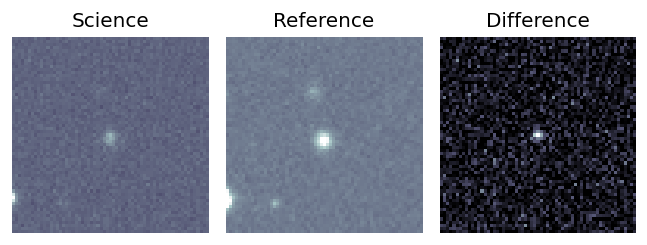
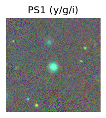
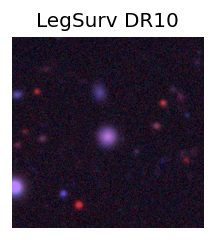
TESS: Sectors 83
SDSS (<15 kpc):Found SDSS phot-z: z=0.16; peak abs mag = -19.66
PS1: 0 sources in 3 arcsec
LegacySurvey: 1 sources in 3 arcsec Closest: d = 1.67 arcsec, 177.9 deg (east of north) photoz=0.14 (68% bounds 0.12, 0.15), type=REX peak abs mag (ext. corrected) = -19.27 (68% bounds -19.05, -19.54)
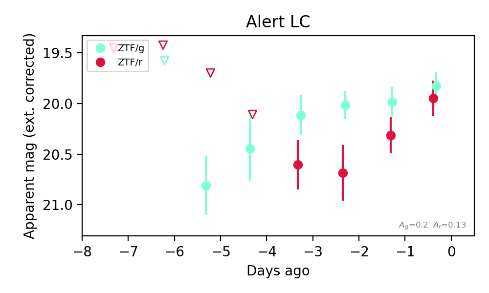
Extinction-corrected gr color:
From alerts: -0.12 +/- 0.23 mag
Consistent with synchrotron, g-r>0!
Rise Rate:
g: 0.16 mag/day
r: 0.25 mag/day
Fade Rate:
5. [ZTF] ZTF26abyvuai (Afterglow?) [Back to Top] [Share] [Trigger Swift] [Fritz Alert] [Fritz Source] [Lasair]RA, Dec: 331.50868, 48.05138 22h 6m2.08s, 48d 3m4.97sGalactic (l, b): 96.55946, -6.16903 ext(g-r) = 0.27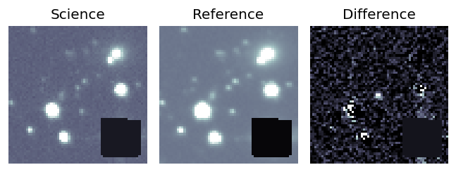
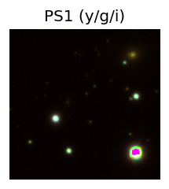

TESS: Sectors [ 16 56 57 76 77 83 84 121]
PS1: 1 source in 3 arcsec Closest: d = 3.69 arcsec photoz=0.18+/-0.02 peak abs mag = -20.01
LegacySurvey: 0 sources in 3 arcsec
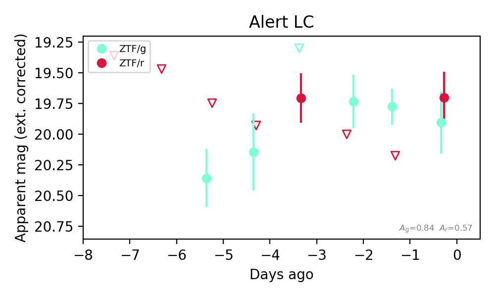
Extinction-corrected gr color:
From alerts: 0.21 +/- 0.33 mag
Consistent with synchrotron, g-r>0!
Rise Rate:
g: 0.11 mag/day
r: 0.45 mag/day
Fade Rate:
r: 0.23 mag/day
6. [ZTF] ZTF26abzbxoh (Afterglow?) [Back to Top] [Share] [Trigger Swift] [Fritz Alert] [Fritz Source] [Lasair]RA, Dec: 319.0613, -10.72807 21h16m14.71s, -10d-43m-41.06sGalactic (l, b): 40.04534, -36.96649 WARNING: 4.89 deg from ecliptic plane ext(g-r) = 0.062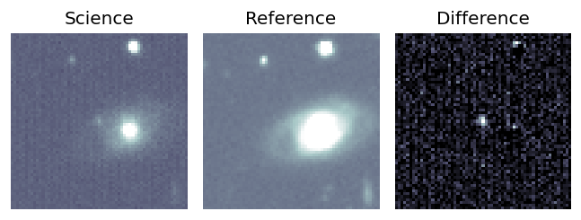
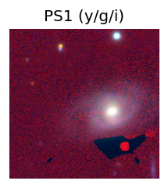
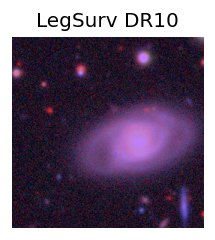
TESS: Sectors [ 92 116]
PS1: 0 sources in 3 arcsec
LegacySurvey: 0 sources in 3 arcsec
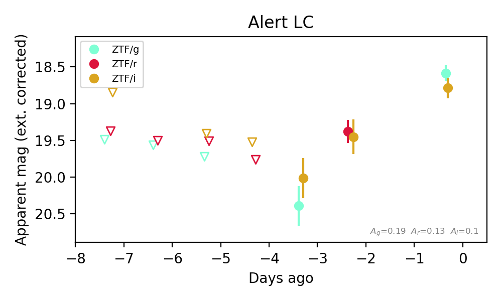
Extinction-corrected gi color:
From alerts: -0.2 +/- 0.18 mag
Extinction-corrected ri color:
From alerts: -0.07 +/- 0.29 mag
Consistent with synchrotron, g-r>0!
Rise Rate:
g: 0.6 mag/day
r: 0.2 mag/day
i: 0.39 mag/day
Fade Rate:
7. [ZTF] ZTF26abziydc (FBOT?) [Back to Top] [Share] [Trigger Swift] [Fritz Alert] [Fritz Source] [Lasair]RA, Dec: 357.91577, 32.16331 23h51m39.78s, 32d 9m47.92sGalactic (l, b): 108.47516, -29.02486 ext(g-r) = 0.049


TESS: Sectors [57 84]
SDSS (<15 kpc):Found SDSS phot-z: z=0.05; peak abs mag = -17.49
PS1: 0 sources in 3 arcsec
LegacySurvey: 1 sources in 3 arcsec Closest: d = 1.01 arcsec, 162.6 deg (east of north) photoz=0.21 (68% bounds 0.09, 0.92), type=EXP peak abs mag (ext. corrected) = -20.71 (68% bounds -18.68, -24.46)

Extinction-corrected gr color:
From alerts: -0.34 +/- 0.18 mag
Extinction-corrected ri color:
From alerts: 1.28 +/- 99 mag
Rise Rate:
g: 0.37 mag/day
r: 0.26 mag/day
Fade Rate:
8. [ZTF] ZTF26abzpywx (Afterglow?) [Back to Top] [Share] [Trigger Swift] [Fritz Alert] [Fritz Source] [Lasair]RA, Dec: 5.53966, 2.91473 0h22m9.52s, 2d54m53.03sGalactic (l, b): 108.5697, -59.13812 WARNING: 0.48 deg from ecliptic plane ext(g-r) = 0.033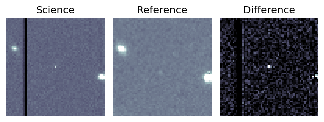
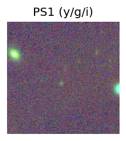
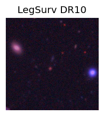
TESS: Sectors 70
SDSS (<15 kpc):Found SDSS phot-z: z=0.66; peak abs mag = -25.09
PS1: 0 sources in 3 arcsec
LegacySurvey: 1 sources in 3 arcsec Closest: d = 1.86 arcsec, 249.0 deg (east of north) photoz=1.05 (68% bounds 0.74, 1.31), type=PSF peak abs mag (ext. corrected) = -26.32 (68% bounds -25.38, -26.9)
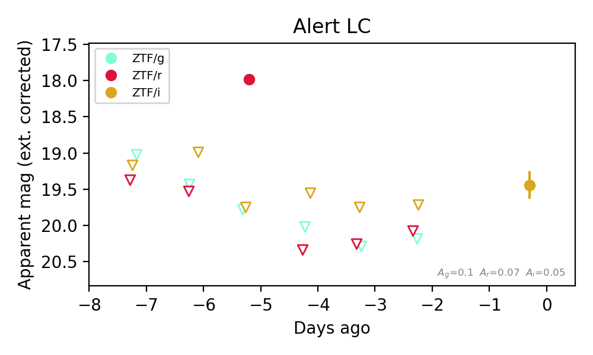
Extinction-corrected gr color:
From alerts: 1.79 +/- 99 mag
Extinction-corrected ri color:
From alerts: -1.76 +/- 99 mag
Rise Rate:
r: 1.46 mag/day
i: 0.04 mag/day
Fade Rate:
r: 2.52 mag/day
9. [ZTF] ZTF26abzqaqg (FBOT?) [Back to Top] [Share] [Trigger Swift] [Fritz Alert] [Fritz Source] [Lasair]RA, Dec: 353.98179, 22.85709 23h35m55.63s, 22d51m25.54sGalactic (l, b): 101.0753, -36.7891 ext(g-r) = 0.069


TESS: Sectors [56 83]
SDSS (<15 kpc):Found SDSS phot-z: z=0.82; peak abs mag = -23.22
PS1: 0 sources in 3 arcsec
LegacySurvey: 1 sources in 3 arcsec Closest: d = 0.59 arcsec, 276.5 deg (east of north) photoz=0.21 (68% bounds 0.15, 0.3), type=EXP peak abs mag (ext. corrected) = -19.77 (68% bounds -18.89, -20.61)

Extinction-corrected gr color:
From alerts: -0.01 +/- 0.2 mag
Consistent with synchrotron, g-r>0!
Rise Rate:
g: 0.35 mag/day
r: 0.02 mag/day
Fade Rate:
10. [ZTF] ZTF26abzrlze (FBOT?) [Back to Top] [Share] [Trigger Swift] [Fritz Alert] [Fritz Source] [Lasair]RA, Dec: 35.25625, 1.6592 2h21m1.50s, 1d39m33.12sGalactic (l, b): 163.3526, -54.02821 ext(g-r) = 0.042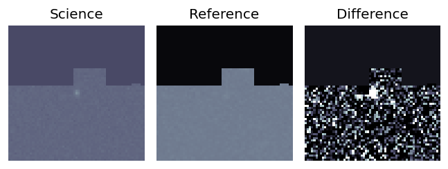
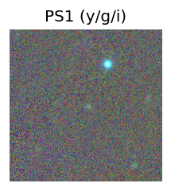
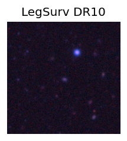
TESS: Sectors [ 4 31 70 71]
SDSS (<15 kpc):Found SDSS phot-z: z=0.33; peak abs mag = -21.99
PS1: 0 sources in 3 arcsec
LegacySurvey: 1 sources in 3 arcsec Closest: d = 1.26 arcsec, 205.2 deg (east of north) photoz=0.2 (68% bounds 0.15, 0.26), type=EXP peak abs mag (ext. corrected) = -20.73 (68% bounds -20.07, -21.37)
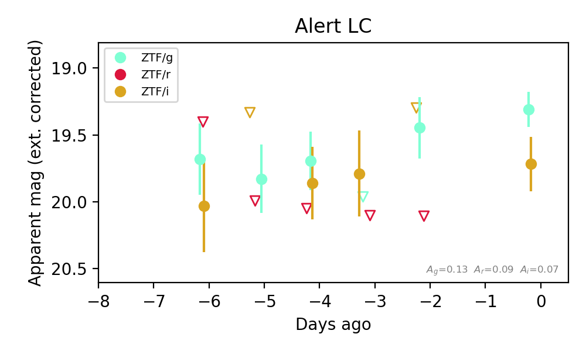
Extinction-corrected gr color:
From alerts: -0.66 +/- 99 mag
Extinction-corrected gi color:
From alerts: -0.41 +/- 0.24 mag
Extinction-corrected ri color:
From alerts: 0.31 +/- 99 mag
Rise Rate:
g: 0.5 mag/day
Fade Rate:
11. [ZTF] ZTF26abztcfi (Afterglow?) [Back to Top] [Share] [Trigger Swift] [Fritz Alert] [Fritz Source] [Lasair]RA, Dec: 29.53138, 28.28001 1h58m7.53s, 28d16m48.03sGalactic (l, b): 140.32916, -32.32888 ext(g-r) = 0.08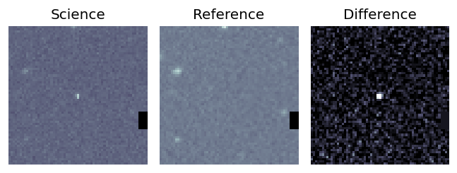
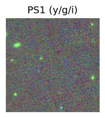
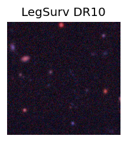
TESS: Sectors [17 58 85]
SDSS (<15 kpc):Found SDSS phot-z: z=0.37; peak abs mag = -22.38
PS1: 0 sources in 3 arcsec
LegacySurvey: 1 sources in 3 arcsec Closest: d = 5.84 arcsec, 314.7 deg (east of north) photoz=0.48 (68% bounds 0.32, 0.81), type=REX peak abs mag (ext. corrected) = -23.03 (68% bounds -22.02, -24.42)
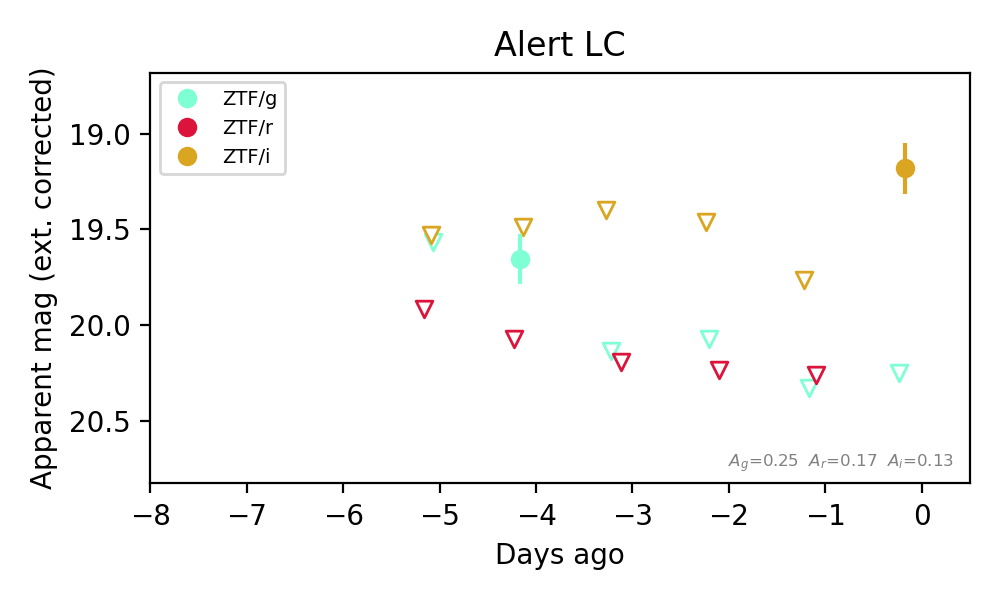
Extinction-corrected gr color:
From alerts: -0.42 +/- 99 mag
Extinction-corrected gi color:
From alerts: 1.07 +/- 99 mag
Rise Rate:
g: 0.11 mag/day
i: 0.55 mag/day
Fade Rate:
g: 0.51 mag/day
12. [ZTF] ZTF26abzvgbg (Afterglow?) [Back to Top] [Share] [Trigger Swift] [Fritz Alert] [Fritz Source] [Lasair]RA, Dec: 62.82174, 14.2184 4h11m17.22s, 14d13m6.23sGalactic (l, b): 178.8077, -26.29454 ext(g-r) = 0.562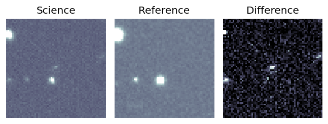
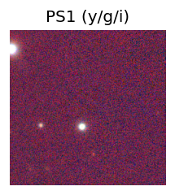

TESS: Sectors [ 5 32 43 44 70 71]
PS1: 0 sources in 3 arcsec
LegacySurvey: 0 sources in 3 arcsec
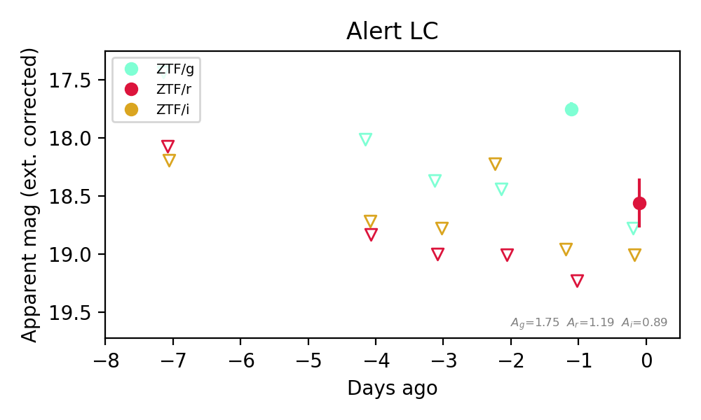
Extinction-corrected gr color:
From alerts: 0.21 +/- 99 mag
Extinction-corrected gi color:
From alerts: -1.21 +/- 99 mag
Extinction-corrected ri color:
From alerts: -0.45 +/- 99 mag
Rise Rate:
g: 0.66 mag/day
r: 0.72 mag/day
Fade Rate:
g: 1.12 mag/day